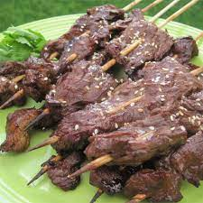

Steak on A Stick Recipe

Teriyaki steak quick and easy
A quick and easy, very tasty version of the teriyaki steak-on-a-stick
that you get from a Chinese restaurant. It's great as an appetizer or
even as finger food at a football watching party! I also use it for
just plain old regular steaks to grill! Either way, it's awesome!
My uncle came up with the recipe and gave it to my mother, who passed it on to me! LOVE it!
Ingredients
- ½ cup soy sauce
- ¼ cup olive oil
- ¼ cup water
- 2 tablespoons molasses
- 2 teaspoons mustard powder
- 1 teaspoon ground ginger
- ½ teaspoon garlic powder
- ½ teaspoon onion powder
- 2 pounds flank steak, cut into thin strips
Directions
- In a large resealable bag, combine the soy sauce, olive oil, water, molasses,
mustard powder, ginger, garlic powder and onion powder. Seal and shake the bag to mix together.
Add steak strips to the bag and seal. Refrigerate for at least 8 hours to marinate.
- Preheat the oven's broiler. Thread meat onto skewers and place on a broiling rack.
- Broil the steak for 3 to 4 minutes on each side. Arrange on a platter to serve.